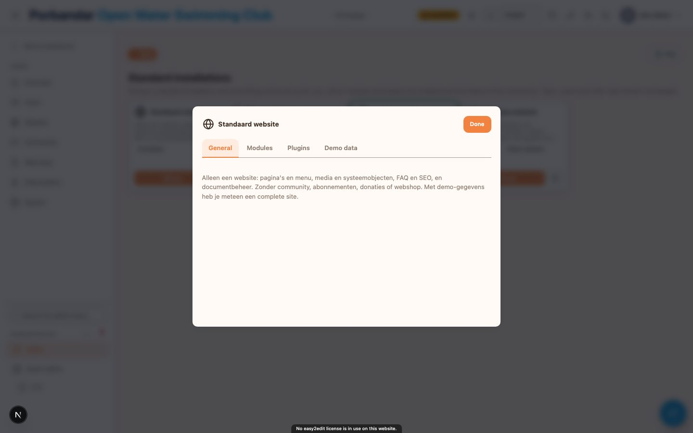
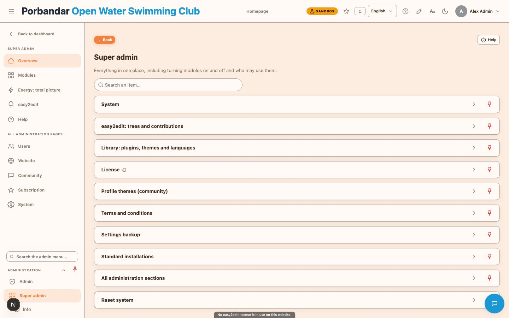
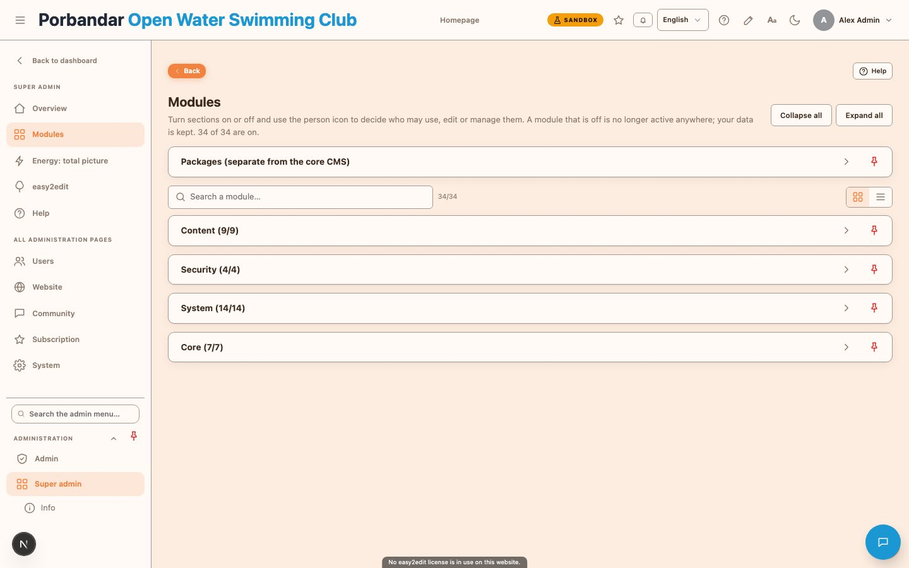
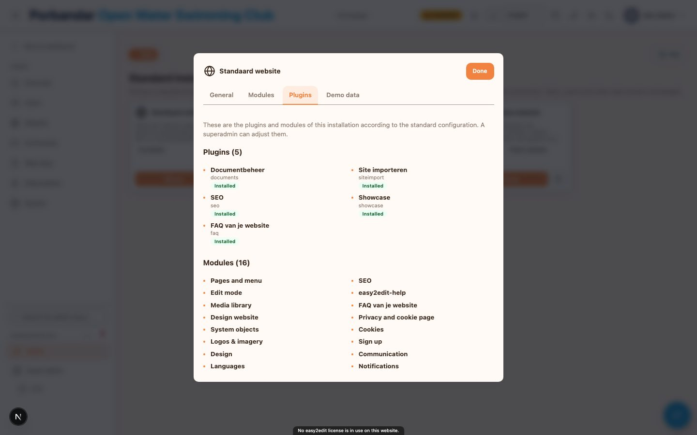

2. Aan de slag
Video: Een standaard installatie kiezen (Nederlandse voice-over ook in English)

Voor het eerst inloggen#
De allereerste keer dat je easy2edit opent, log je in als superadmin. Dit account heeft volledige toegang tot alle instellingen en is het account waarmee je de website inricht.
Als de site op je eigen computer draait (localhost), vraagt het systeem eerst of je de sandbox wilt aanzetten. Met de sandbox aan worden betalingen, e-mail, sms en tests van API-koppelingen alleen gesimuleerd: er wordt niets echt verstuurd of in rekening gebracht, zelfs niet als je al live sleutels hebt ingevoerd. Je antwoord wordt onthouden en je kunt dit later nog wijzigen bij Admin > Sandbox.

Standaard installatie#
Als er nog niets is geïnstalleerd, verschijnt er een pop-up die een standaard installatie aanbiedt. Deze heeft twee tabbladen:
- Installatie: kies een kant-en-klare opzet om mee te starten.
- Vullen met AI: legt uit dat de website met AI gevuld kan worden, bijvoorbeeld door een bestaande website te importeren, content te vertalen of te verbeteren met een instructie. Dit tabblad laat ook zien of er al een AI-koppeling beschikbaar is.
Je kunt een standaard installatie ook later starten of wijzigen bij Super admin-overzicht of bij Admin > Standaard installaties.

De site vullen met AI#
Zodra er een standaard installatie is ingesteld, vraagt het systeem of je AI wilt gebruiken om de site te vullen. Kies je voor ja, dan ga je direct door naar het aankopen van AI-tegoed. Een welkomstpop-up legt vervolgens uit wat AI-tegoed is en laat de superadmin de tegoedinstellingen instellen. Zie het AI-hoofdstuk voor meer informatie over hoe dit werkt en hoe je het daarna beheert.

Bomen planten met easy2edit#
Tijdens de onboarding zie je mogelijk ook een optionele stap genaamd "Bomen planten met easy2edit":
- Kies je Ja, dan worden de standaard bijdragen aangezet in testmodus en wordt je website gekoppeld aan de easy2edit-server.
- Kies je Nee, dan gebeurt er niets en kun je dit later alsnog doen.
Ga je verder, dan vraagt de prijswizard of je bomen wilt planten met easy2edit. Er is een kleine maandelijkse vergoeding voor beheer en overzicht, en de bomen zelf kosten ongeveer EUR 0,80 per stuk, maandelijks gefactureerd door Ecologi. Je kunt dit later altijd nog bekijken en beheren via de bijbehorende Ecologi-schermen zodra de Ecologi-koppeling actief is.
De basis instellen#
Nadat je de eerste pop-ups hebt doorlopen, doorloop je de volgende instellingen om je site klaar te maken:
- Admin > Systeem: voer de basisinformatie over je site in, zoals de sitenaam, bedrijfsgegevens, contactgegevens en adressen.
- Super admin-overzicht of Admin > Standaard installaties: kies de standaard installatie die bij jouw website past, als je dit nog niet hebt gedaan.
- Admin > Thema: kies een thema voor de uitstraling van de site.
- Admin > Logo's / afbeeldingen: upload je logo's en afbeeldingen.
- Admin > Talen: kies welke talen je website moet aanbieden.
- Admin > Gebruikers en Rollen: maak de gebruikersaccounts en rollen aan die je nodig hebt, en bepaal wie wat mag doen.
Je weg vinden in modules#
easy2edit is opgebouwd uit modules, die elk een deel van het systeem dekken, zoals pagina's, media, talen, gebruikers, betalingen of beveiliging. Modules kunnen afzonderlijk aan- of uitgezet en geconfigureerd worden. Terwijl je de bovenstaande stappen doorloopt, kom je er direct een aantal tegen, bijvoorbeeld Admin > Systeem, Admin > Thema, Admin > Talen en Admin > Gebruikers en Rollen.
Een volledig overzicht van alle beschikbare modules, wat ze doen en hoe je ze beheert, vind je in een later hoofdstuk. Ben je superadmin, dan kun je in het adminvenster altijd de complete lijst met modules en hun instellingen bekijken.
Een goede startchecklist#
Samengevat ziet een soepele eerste installatie er meestal zo uit:
- Log in als superadmin.
- Beslis over de sandbox-instelling als je op localhost werkt.
- Kies een standaardinstallatie en beslis of je AI wilt laten helpen bij het vullen van de site.
- Stel AI-tegoed in als je AI-functies wilt gebruiken.
- Beslis of je bomen wilt planten met easy2edit.
- Vul je basisinformatie over de site in bij Admin > Systeem.
- Kies een thema en upload je logo's en afbeeldingen.
- Kies je talen.
- Maak de gebruikers en rollen aan die je nodig hebt.
Zodra deze stappen zijn voltooid, heeft je website haar kernidentiteit, inhoudsstructuur en toegangsregels op orde, en ben je klaar om te beginnen met het bouwen van pagina's en het toevoegen van inhoud.